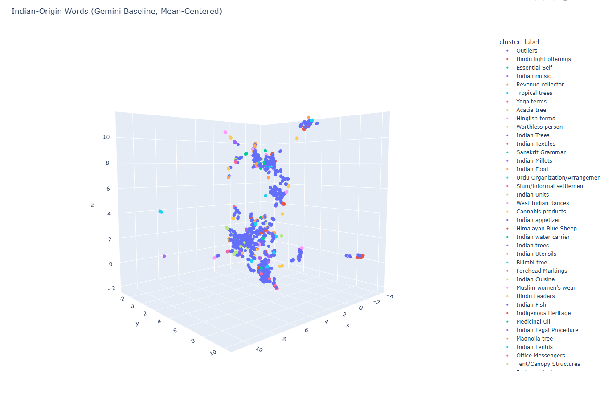
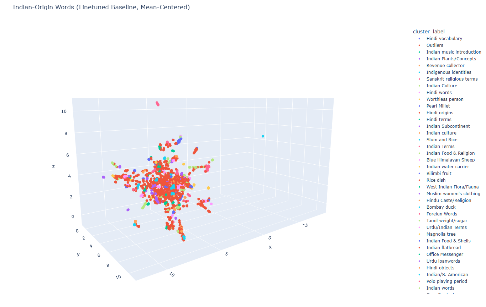

Finding structure in Indian-origin English words
Indian-origin words like pyjama, jungle or chutney are part of everyday English.
The other property that these words share is that they are part of the official Scrabble Dictionary (the ~280K words that are "officially" playable in Scrabble).
The Scrabble dictionary is a mishmash of words — some natively belonging to the English language, and some like the ones listed above adapted from other languages. I was curious what kinds of words actually get adapted into the English language — are they random? Are they words that carried over from colonial times? Are they words that are in pop culture now?
To find out, I clustered the embeddings of all Indian-origin words in the Scrabble dictionary with an off-the-shelf embedding model, and also finetuned a small embedding model of my own.
Note: The Scrabble Wordlist overlaps with the English dictionary but it is not 1:1. I used this dataset as a proxy for what words end up making it into the English language.
The setup
I started off by separating the ~2,600 Indian-origin words from the ~278,000-word CSW24 dataset. I embedded them with gemini-embedding-001, clustered with HDBSCAN, and asked Gemini to come up with labels for the clusters.
Credit to Joshua Castellano and the Scrabble community for this annotated dataset which includes the origins of CSW words.

Here's the result. There's some grouping, but I felt like these words had more to give. So I fine-tuned sentence-transformers/all-MiniLM-L6-v2 — a small, 22M parameter embedding model on the ~278,000 word-definition pairs from CSW24, holding out the Indian-origin words entirely so they wouldn't leak into training.
The training process
Since the dataset is pairs of (word, definition) there are no "negative" examples for training. However, within each batch of (word, definition) pairs, for each word, you can consider all the other definitions as negative examples. For instance:
| Word | Definition |
|---|---|
| Chameleon | Small reptile |
| Cook | Someone who makes food |
| Crab | Sea animal |
For a particular word, say "cook", you can consider "sea animal" and "small reptile" to be negative examples since they are explicitly not the definition of "cook".
The optimization function, in this case Multiple Negative Ranking loss, then tries to pull together the matched pair and pushes the rest apart. With a 64-item batch, you get 63 free negatives per example. For dictionary data this works very well! Every entry is a clean positive, and the rest of the batch supplies the contrast.
Matryoshka Representation Learning trains the embedding so the first N dimensions are themselves a usable embedding. A 384-dim vector contains a usable 256-dim vector inside it. You can truncate at inference time without retraining: full quality at 384, faster at 256. One model, multiple resolutions.
On the held-out test set, word→definition retrieval went from ~50% to 68% Accuracy@1. The fine-tuned model is up on HuggingFace. I then embedded the 2,600 Indian-origin words with the fine-tuned model and clustered with HDBSCAN to get the following:

Findings
The majority of Indian-origin words in the Scrabble dictionary fall under these categories:
- Flora and fauna (~19%) — trees, plants, animals. The British were cataloguing a subcontinent's biodiversity.
- Colonial administration (~18%) — land revenue terms, military ranks, legal procedures, titles. Words English needed because British administrators were running things they had no vocabulary for.
- Food and cuisine (~17%) — millets, lentils, breads, utensils.
- Religion (~10%) — yoga, mantras, deities.
- Textiles (~10%) — shawls, turbans, silks.
The remaining ~26% breaks into much narrower groupings — single-concept clusters like "Bombay duck" or "pearl millet", and a long tail of outliers that HDBSCAN couldn't confidently group at all.
The familiar words are the minority. The Indian-origin words that made it into everyday English mostly come from the food, clothing, and religion buckets. The bulk of what's preserved in Scrabble is obscure flora, fauna, and colonial bureaucracy — words like ZAMINDAR, NILGAI, TALUK, BILIMBI. The Scrabble dictionary, it turns out, is a lexical fossil record.
The next piece of this work is figuring out whether the gain comes from real semantic understanding, or whether the model just learned what dictionary definitions look like.
For now: ZAMINDAR for 78.